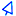

- Clickgest requiere de un programa de conexión especifico que encontrará en su escritorio Windows con el icono  de acceso directo.
Programa de conexión
- Si no tiene instalado el programa de conexión a Clickgest, debe bajarlo desde este enlace e instalarlo en su ordenador.
- Si utiliza diferentes ordenadores para conectarse puede instalar el programa de conexión en cada uno de ellos.
- Si no quiere instalar el programa cliente en este equipo, o no dispone de permisos para hacerlo, puede instalar el programa de acceso en una memoria flash extraíble y su funcionamiento será igualmente correcto.
Configuración del programa de conexión (cliente)
- Durante el proceso de instalación del software cliente, este le pedirá unos datos de configuración.
- Estos datos los recibirá en el mail de confirmación del alta del servicio.
- Provisionalmente puede acceder a una demo "Pública" con el siguiente usuario:
- Grupo: basico01
- Empresa: d001
- Usuario: juan
- Password: juan